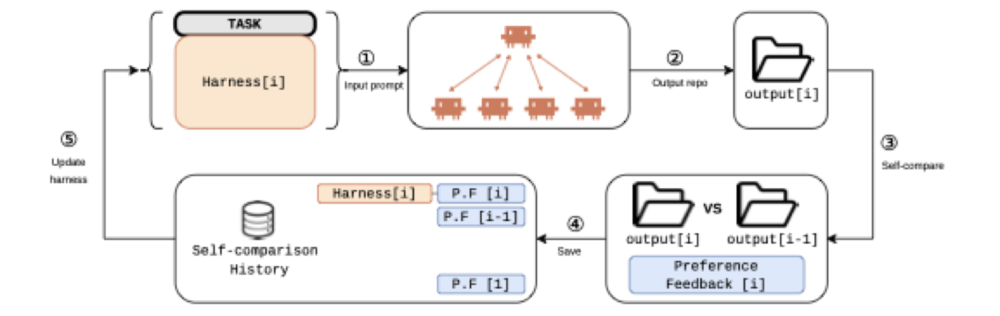
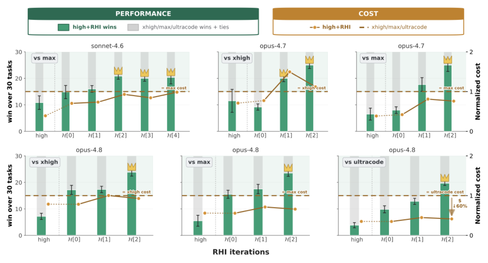

Recursive Harness Self-Improvement (Sakana/Berkeley)
TL;DR
- Recursive Harness Self-Improvement (RHI) (Lee, Xu, Seely, Lee, Zaharia, Tang — Sakana AI & UC Berkeley, arXiv 2607.15524) represents the agent harness as a prompt-level specification of the agent loop — roles, instructions, inter-agent contracts, workflow hops — and refines it using pairwise preferences over its own revision history. No gradients, no scaffold code edits.
- On 30 synthetic ML-research tasks, one to two iterations lift a
high-reasoning agent past the same model atmaxandultracodereasoning, at up to 60% lower inference cost. Despite the name, the optimizer is a fixed external model: the recursion runs over revision history, not over the editor. - The mechanism, per the authors, is task-specific context management — contracts as a learned sparsity pattern on inter-agent communication — evidenced by flat output-token counts alongside 32–64% drops in KV-cache traffic.
Why this matters
The dominant framing of harnesses has been inference-time scaffolding around a frozen model. This paper adopts the newer model–harness co-evolution view: harnesses are also data-generating components, because their execution traces feed the training corpora of future models. A harness therefore has two objectives — task performance and trace quality. RHI addresses "the first half" of that loop.
The practical gap: provider-built scaffolds are expensive to update continually, and most users cannot modify them anyway. So the question becomes whether user-constructed, task-specific harnesses can be optimized cheaply — lightweight, a few iterations — a far more accessible regime than end-to-end RL, and complementary to it. Within this tracker, RHI occupies the "optimize the harness automatically, per task, at inference time" corner of the space the Harness Handbook and the harness-generalization paper map out.
The core idea
The key insight: if the harness is expressed as text, harness optimization becomes a text-refinement problem. RHI writes the whole agent loop as a prompt-level specification, then improves it by running it, comparing the result against the previous revision's output, and rewriting. The signal is relative — this revision beat that one — which avoids needing calibrated absolute scores of harness quality.

Figure from the paper: at iteration \(i\) the agent solves the task with harness \(H^{(i)}\); an LLM evaluator compares output[i] with output[i-1]; the preference is stored in the self-comparison history; an LLM harness optimizer updates \(H^{(i)} \to H^{(i+1)}\).
What "recursive" means here — and what it does not. Get this straight before anything else: nothing in RHI edits the thing doing the editing. The update rule is \(H^{(i+1)} = \mathcal{L}_{\mathrm{harness}}(H^{(i)}, \mathcal{D}_x^{(i)})\) — read as: the next harness spec is written by a model \(\mathcal{L}_{\mathrm{harness}}\) handed the current spec plus the record \(\mathcal{D}_x^{(i)}\) of how earlier revisions of the harness for task \(x\) fared. That model is fixed and external, with a fixed system prompt, sitting outside the object it rewrites. The edit set is the harness text alone; optimizer, evaluator, evaluation prompt, agent, and weights are all constant, so the editor is not in the edit set. What recurses is the revision history — iteration \(i{+}1\) is a function of iteration \(i\) plus the accumulated verdicts — not the improver, in the Gödel-machine sense where the self-modifying code includes the code performing the modification. That puts RHI in the GEPA / reflective-text-optimization family, not the Darwin Gödel Machine family. The paper is not misleading — Equation 5 says exactly this — but its title invites the stronger reading. Read "recursive" as iterated with memory.
The second, less obvious part of the idea is what gets optimized: improved task-specific context management — the revisions restructure which information reaches which part of the loop — rather than longer chains of thought.
How it works
The loop in one sentence. For each task, RHI runs the current harness spec, asks a judge whether the repository it produced is better than the one the previous spec produced, and hands that verdict plus every earlier verdict to a rewriter that emits the next spec. Everything else is detail about what a spec contains and why one comparison per step is enough.
One revision, start to finish
Take one of the paper's 30 tasks — one of the ten quantitative-finance tasks synthesized from a Citadel job posting — run with Claude Opus 4.8 at high reasoning. Two versions of the harness already exist: the hand-written original, and the one the optimizer wrote from it. This walkthrough is the step that produces the third. (Task, model, and numbers are the paper's; it reports no named case study, so this single-revision narrative is assembled from its method section.)
Step 1 — Run the current spec. The agent is an ordinary agent; the only change is that its input is the task plus the harness spec — a plain-text description of the agent loop: who the sub-agents are, what each is told to do, what each must hand back, in what order they are called. What comes out is not an answer but an entire code repository, with the same four deliverables for every task: a research report, figures, a metrics file, an index file.
Step 2 — Compare that repository against the previous revision's. A second model, the judge, sees the two side by side under a fixed evaluation prompt that never changes across tasks or iterations. It reads only the four standardized deliverables, truncated identically for both sides so they fill 30–40% of its context window — which is what makes judging whole repositories tractable. The verdict is one of three: this one is better, that one is better, or a tie. One judgment against one predecessor; no population, no absolute score. The previous repository is cached from the previous iteration, so nothing is re-run.
Step 3 — File the verdict, keep the old ones. Verdicts accumulate rather than replace. The rewrite about to happen sees not only "revision 2 beat revision 1" but also "revision 1 beat revision 0", so a genuinely good change that one noisy verdict would otherwise reverse stays visible in the record.
Step 4 — Rewrite the spec. A third model — the optimizer, fixed, with a fixed system prompt — reads the current spec plus the whole verdict history and writes the next spec. It is never shown the judge's criteria; it learns them only from which revisions won. Its prompt does tell it where to concentrate, and the emphasis is deliberate:
| Part of the spec | What it is | Emphasis |
|---|---|---|
| Role | who a sub-agent is | low |
| Instruction | what that sub-agent is told to do | low |
| Contract | the named fields a sub-agent must hand back — exactly what crosses that boundary | high |
| Hop | one step of orchestrator-to-sub-agent control flow: who is called when, on what | high |
| Auxiliary rules | acceptance gates before finishing, fallbacks on failure, recall triggers, agent-to-agent conventions | emerge over iterations |
Roles and instructions are largely shared across ML-research tasks — data prep, training, validation, reporting — so almost all the task-specific information lives in the bottom three rows.
Step 5 — Decide whether to go again.
Once the same thing has happened for all 30 tasks, RHI looks at the fraction of tasks where the new revision beat the old one. Above a threshold it runs another sweep; below it, it stops. The signal that drives the rewrite also halts it, so the loop quits precisely when further edits would be chasing judge noise. In practice one to four sweeps do the work; for Opus 4.8 the third spec is the one that beats max and ultracode alike.
The machinery behind steps 2–5
What the comparison is standing in for (step 2). The harness you would actually want is the one that beats any competing harness on this task:
Symbol by symbol: \(x\) is the task; \(H\) the harness spec being scored, drawn from the space \(\mathcal{H}\) of possible specs, and \(H'\) a competitor sampled from \(\mu\), a distribution over the harnesses someone might plausibly have written; \(\mathcal{A}(H,x)\) is the agent running harness \(H\) on task \(x\), and \(y,y'\) are the repositories the two runs produce; \(\mathcal{L}_{\mathrm{eval}}\) is the LLM judge and \(x_{\mathrm{eval}}\) its fixed evaluation prompt; \(y\succ y'\) means the judge preferred \(y\); \(\mathbf{1}\{\cdot\}\) is 1 when that happens and 0 otherwise; \(\mathbb{E}\) averages over the competitor and the randomness of both runs. So \(f_x(H)\) is a win rate against the field, and \(H_x^{*}\) is the harness that maximizes it.
Nobody can compute that. RHI replaces the competitor distribution \(\mu\) with a point mass on one harness — the previous revision:
Same notation, plus \(i\) for the iteration index, \(H_x^{(i-1)}\) for the previous revision of this task's harness, and \(y^{-}\) for the repository it produced. This is the trajectory-local relaxation: beat your own last version instead of beating the field.
Why that swap is what makes the method cheap. Cost per iteration is \(C=N_{\mathrm{trace}}+N_{\mathrm{pair}}\), where \(N_{\mathrm{trace}}\) counts agent executions — each one produces a whole repository — and \(N_{\mathrm{pair}}\) counts judge calls. The ideal objective needs \(M\) traces for \(M\) competing harnesses and \(\binom{M}{2}\) comparisons among them: \(\Theta(M^2)\). Finite-population search — AlphaEvolve, ADAS, AFlow, GEPA, Meta-Harness — shrinks the field to \(m\ll M\) survivors but still pays \(\Theta(m^2)\). RHI runs exactly one execution and one comparison: \(\Theta(1)\). The constant matters more than usual because a single "evaluation" is an agent run that generates an entire repository and then has it judged.
Why the swap is not fatal. Assume a Bradley–Terry-style model: each harness has a latent quality \(u_x(H)\), one number per harness on task \(x\), and the judge prefers \(H\) over \(H'\) with probability \(\sigma(u_x(H)-u_x(H'))\), where \(\sigma\) is an increasing link function with \(\sigma(0)=\tfrac12\) — equal quality means a coin flip. Then the ideal objective is \(\mathbb{E}_{H'\sim\mu}[\sigma(u_x(H)-u_x(H'))]\) and the relaxation is \(\sigma(u_x(H)-u_x(H^{(i-1)}_x))\) — both increasing in the same latent quality, so any revision that truly beats its predecessor more than half the time also raises the ideal objective. What the loop gets is a noisy local ascent signal, not an unbiased estimator.
The history as momentum (steps 3–4). One comparison per iteration is thin, so the rewrite conditions on all of them:
\(\mathcal{D}_x^{(i)}\) is the self-comparison history for task \(x\): every verdict from iteration 1 through \(i\), where verdict \(k\) is the judge's comparison of revision \(k\)'s repository \(y_x^{(k)}\) against revision \(k{-}1\)'s. \(\mathcal{L}_{\mathrm{harness}}\) is the fixed optimizer model of the previous section. Note what it takes and what it does not: it sees \(\mathcal{D}_x^{(i)}\) but never \(x_{\mathrm{eval}}\), so the judge's six criteria — deliverable coverage, empirical rigor, reproducibility, presentation, engineering quality, task alignment — reach it only through which revisions won. RHI optimizes an implicit preference, not a stated rubric.
The paper's Q&A appendix answers the obvious worry — a good edit at revision \(i{-}2\) undone by a noisy verdict at \(i{-}1\) — by noting that the retained history acts as a momentum signal, and backs it with a stability measurement: cosine similarity between consecutive harness texts climbs 0.82 → 0.97 → 0.98 → 0.99. The first rewrite is a rewrite; later ones are refinements, not oscillations. Split by component, contracts stabilize fastest and cluster most strongly by task (0.48 → 0.66 → 0.69 → 0.72 across consecutive iterations), while roles barely move off noise (0.28 → 0.31 → 0.33 → 0.31) — consistent with contracts carrying the task-specific information, with the confound the authors flag themselves: contracts are also what the optimizer prompt told it to prioritize.
Stopping (step 5). The improvement rate is \(s_i=\frac1n\sum_j \mathbf{1}[y_j^{i}\succ y_j^{i-1}]\): over the \(n=30\) tasks indexed by \(j\), the fraction where iteration \(i\)'s repository beat iteration \(i{-}1\)'s. The loop breaks when \(s_i<\epsilon\) for a threshold \(\epsilon\) the paper never states numerically.
Why contracts are the lever
A contract restricts an inter-agent edge to the named fields the downstream decision actually needs. The authors' framing is worth carrying: that is a learned sparsity pattern on inter-agent information flow — a fully shared interaction history is the dense case where every agent conditions on everything, and a contract prunes each edge to its payload. That buys quality and cost at once, and predicts an efficiency story about cache traffic rather than output length, which is what the resource numbers show.
§6.3 turns the hypothesis into an objective the loop is claimed to drift toward, never one it explicitly optimizes:
\(X\) is the task, treated as a random variable; \(\mathcal{C}_{\mathrm{ext}}=\{\texttt{contract},\texttt{hop}\}\) is the set of component types the optimizer prompt emphasizes; \(z^{\texttt{hc},(i)}_{Xk}\) is an embedding of the \(k\)-th component of type hc in the harness at iteration \(i\); \(K^{\texttt{hc}}_{Xi}\) is how many such components exist, so the inner sum is an average over them; \(I(\cdot\,;\cdot)\) is mutual information; \(\mathrm{TC}\) is total correlation, measuring how redundant those components are with one another once the task is known; \(\beta>0\) sets the trade-off; and \(g_i\) denotes the harness's component set at iteration \(i\). In words: make the workflow components maximally informative about the task while keeping them non-redundant with each other given the task. The first term is what the optimizer prompt asks for; the second is a property of the optimizer's base model, and it is what blocks the degenerate solution in which every component simply restates the task.
What the loop cannot tell you
Four limits are structural to the protocol rather than incidental to this run.
Optimized and reported on the same task. Harnesses are per-task and every headline number is measured on the task the harness was tuned for, so nothing separates "better harness design" from "adaptation to this instance" — precisely the decomposition the Rethinking-Harness-Evolution critique demands.
The judge is the only signal, and it is a relative of the agent. One LLM's preference between two repositories is the entire feedback channel, and the optimizer reaches the criteria only through it. Nothing distinguishes "the repository got better" from "the repository got more legible to gpt-5.5 and opus-4.x judges", whose model families overlap heavily with the agent's own. Two evaluator configurations and three seeds control judge variance, not judge bias; the missing experiment is a held-out evaluator, or a deliverable that can be executed.
The tasks are synthetic and schema-constrained. All 30 are LLM-generated from three job postings, and the four-file deliverable schema is imposed so pairwise judging has a common interface. That schema does real work: it is exactly the kind of fixed structure a contract-optimizing loop can specialize against.
Search is not costed. The resource numbers are for the final run only. Producing the third spec took two extra agent executions and two judged comparisons per task, so the amortized cost is roughly 3× the per-run figure — RHI pays off when a harness is reused.
Algorithm (RHI, condensed from Algorithm 1 in the paper):
Input: tasks {x_j}, agent A, evaluator L_eval, harness optimizer L_harness,
eval prompt x_eval, stopping threshold eps
Initialize harness H(0) per task; history D <- {}; run A(H(0), x) once
for i = 1, 2, ...:
for each task x_j:
y(i) <- A(H(i), x_j) # run current harness
D_j <- D_j U {L_eval(y(i), y(i-1); x_eval)} # compare vs. predecessor
s_i <- (1/n) * #{tasks where y(i) beats y(i-1)} # improvement rate
if s_i < eps: break # revisions stopped winning
H(i+1) <- L_harness(H(i), D) # rewrite spec from history
return task-specific harnesses H*
The line to watch is H(i+1) <- L_harness(H(i), D): L_harness appears on the right-hand side only, never as an output — the whole content of the "not recursive in the improver" point.
Results

Figure from the paper: across 30 synthetic ML research tasks, high-reasoning agents with RHI-improved harnesses achieve higher pairwise win counts than test-time-scaling baselines (mean over two LLM judges, three seeds).
Setup. 30 tasks — 10 each in quantitative finance, robotics, pharmaceutical ML — all synthesized by an LLM from three real job postings (Citadel, Amazon frontier-AI robotics, Genentech). Base agents: Claude Sonnet 4.6, Opus 4.7, Opus 4.8 at high; baselines the same models at xhigh, max, ultracode. Judges: gpt-5.5 at max reasoning and opus-4.7/4.8 at xhigh, three seeds.
Performance. After two iterations sonnet-4.6-high + H[2] (the spec after two rewrites) beats sonnet-4.6-max on 20 of 30 comparisons, and \(i=3,4\) keep winning. On Opus 4.7 the hand-written \(H[0]\) loses to xhigh and max; one iteration flips both. On Opus 4.8, \(H[2]\) beats all three — including ultracode, which is not merely more reasoning but the provider's built-in dynamic workflow that spawns its own subagents. A prompt-level user harness beating the provider's system-level multi-agent scaffold is the strongest single claim.
Where the 60% comes from. Resource numbers are normalized per model to that model's own high agent = 1.0, averaged over the 30 tasks. On Opus 4.8: high + H[2] costs 1.69, max 2.19, ultracode 4.15. The headline is \(1 - 1.69/4.15 \approx 60\%\) — the final RHI run against the most expensive baseline on the strongest model. Against max it is 23%; Opus 4.7 high + H[1] (2.11) is 18% below max (2.60); Sonnet 4.6 high + H[2] (2.38) is 7% below max (2.56). "Up to 60%" is one cell of a table whose typical value is 7–23%, and it excludes the cost of the search that produced the harness.
Cache traffic moves the same way and is the mechanism evidence: −33% for Sonnet (4.91 → 3.31), −37% for Opus 4.7 (3.37 → 2.11), −32% vs max and −64% vs ultracode for Opus 4.8 (4.74 → 1.69). Output tokens stay flat while performance climbs — 1.71–1.86 across Sonnet's five iterations, 1.42–1.81 across Opus 4.8's three — the decoupling that rules out "it just thinks longer" and the observation the hypothesis above is built to explain. (Opus 4.7 is the honest exception: there tokens rose with performance, and the authors say the two explanations cannot be separated.)
Limits the authors find. RHI does not substitute for a better model: sonnet-4.6-high + H[i], \(i\le4\), fails to close the gap to opus-4.7-high/xhigh, and gains plateau at 2–4 iterations. A useful negative result from the appendix: simply telling the agent "Create an agent team" scores lower Elo than the plain single agent at higher cost, on both models. Multi-agent execution is not free value; the specification is what makes it pay.
How it connects
- Rethinking Harness Evolution: RHI cites it directly (§2.2) as the reason the method must be cheap — once search cost is counted, automatic harness evolution fails to beat simple test-time scaling. RHI concedes that and changes the cost structure to \(\Theta(1)\); whether it escapes the critique is separate, since the held-out generalization test is not run here.
- Meta-Harness: the explicit foil. RHI's §3.1 argues Meta-Harness instantiates the finite-population approximation — an archive of harnesses with source, scores, and traces on a filesystem, proposer free to inspect anything — whereas RHI's comparator is only \(H^{(i-1)}\). They now bracket the design space: maximal feedback bandwidth over a population versus one comparison per step with a compressed history.
- Mendel Gödel Machine: the same question — how much evidence should one edit see? MGM hands its editor a controlled pair of trajectories; RHI hands its optimizer one verdict plus the compressed history of earlier ones.
- Training Agents Inside Their Harnesses (OpenForgeRL): the literal other half of the co-evolution loop — it trains the model inside a fixed harness; RHI improves the harness around a fixed model.
- Harness Handbook: the same "harnesses must evolve" problem from the code side. RHI sidesteps it by staying in prompt-space — which is exactly why it applies to user harnesses and not Claude Code-scale codebases. No Universally Best Harness supplies the premise: if harness choice is a model–problem-specific hyperparameter, per-task adaptation is forced.
- Long-Horizon Agents survey places RHI in the "self-evolution" cell; also related: AREX, evolving-benchmarks, agentic-context-management.
- Prior work: ADAS searched agentic designs in code with a meta-agent; the Darwin Gödel Machine had agents rewrite scaffold code under empirical validation; DSPy and GEPA optimize prompts programmatically. RHI's bets: prompt-level representation of the whole loop, feedback over revision history, trace-quality framing.
Critical take
The four limits recorded above under "What the loop cannot tell you" are the load-bearing ones, and they compound: synthetic tasks with an imposed deliverable schema, harnesses tuned and scored on the same instance, one in-family LLM judge as the entire feedback channel, and a headline efficiency number from a single table cell. Add the naming: \(\mathcal{L}_{\mathrm{harness}}\) is fixed and outside the edit set, so nothing here bears on RSI in the Gödel-machine sense — the right comparison class is GEPA and DSPy, not DGM-style self-editing. The trace-quality half of the co-evolution framing that motivates the paper is asserted rather than tested: no experiment shows a model trained on RHI traces improving. And the mechanism account is correlational in a specific way — the information-theoretic objective is never optimized, and it credits exactly the components (contracts, hops) the optimizer prompt named, which is also where the embedding analysis finds the strongest clustering. What survives is worth having: a \(\Theta(1)\) loop, run once or twice, moved a high-reasoning agent past the same model at max and at ultracode, while cache traffic fell and output length did not move.
If you remember three things
- RHI = the agent loop written as a prompt, rewritten from pairwise comparisons against its own revision history at \(\Theta(1)\) per iteration instead of population search's \(\Theta(m^2)\).
- The optimizer is a fixed external model — the recursion is over revision history, not over the editor — and what it mostly rewrites is the contract: which fields cross each inter-agent boundary. That is where the quality and the 32–64% cache savings come from.
- One to two iterations let a
high-reasoning configuration beat the same model atmaxandultracodeat up to 60% lower final-run cost — on 30 synthetic tasks, scored by LLM judges, with no held-out split and search cost excluded.